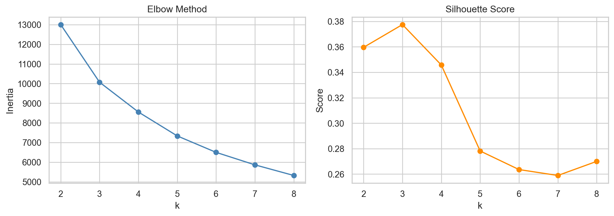
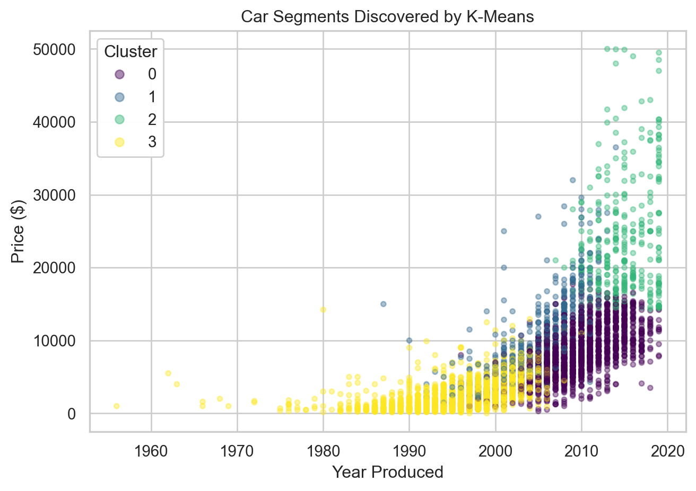

Everything so far has been supervised, meaning we had a known answer like price or body type to predict. Clustering is unsupervised: there is no target, and the algorithm groups cars purely by how similar their features are. Using K-Means on the Belarus 2019 dataset, we ask whether used cars naturally fall into a handful of market segments based on price, mileage, age, and engine size, without ever telling the model what those segments should be.
Preparing the Data
We select four numeric features, drop missing values, and take a random sample to keep the plots readable. Because K-Means measures distance, we standardize every feature to a common scale so that large-numbered features like odometer do not dominate.
K-Means needs us to pick k, the number of clusters. Two standard tools guide the choice: the elbow method, which looks for where adding clusters stops sharply reducing within-cluster spread, and the silhouette score, which measures how cleanly separated the clusters are, where higher is better.

The curves point to four clusters as a reasonable, well-separated choice. We fit the final model there.
Code
km = KMeans(n_clusters=4, random_state=42, n_init=10).fit(X)df["cluster"] = km.labels_print(f"Silhouette score at k=4: {silhouette_score(X, km.labels_):.3f}")
Silhouette score at k=4: 0.346
Profiling the Segments
Averaging the original, unscaled features within each cluster reveals what each segment represents.
price_usd
odometer_value
year_produced
engine_capacity
count
cluster
0
8095.0
162689.0
2009.0
2.0
1634
1
10858.0
246694.0
2005.0
4.0
483
2
23771.0
90370.0
2015.0
2.0
328
3
2694.0
323200.0
1997.0
2.0
2555

The clusters separate into intuitive market segments, for example newer and pricier cars versus older high-mileage budget cars, even though the algorithm was never told about price tiers or age.
Takeaway
Left to find structure on its own, K-Means recovers sensible used-car segments from just four standardized features, with a silhouette score around 0.35 indicating moderate, real separation. The value of unsupervised learning is exactly this: it surfaces natural groupings like budget commuters, newer premium cars, and high-mileage older vehicles that a dealer could use for inventory or pricing strategy, with no labels required. This page demonstrates the clustering workflow: standardizing features, choosing the number of clusters with the elbow and silhouette methods, and profiling the resulting segments.
Source Code
---title: "Finding Natural Car Segments with Clustering"execute: echo: false warning: falseformat: html: theme: flatly code-fold: true code-tools: true---```{python}import warnings; warnings.filterwarnings("ignore")import numpy as npimport pandas as pdimport matplotlib.pyplot as pltimport seaborn as snsfrom sklearn.preprocessing import StandardScalerfrom sklearn.cluster import KMeansfrom sklearn.metrics import silhouette_scoresns.set_theme(style="whitegrid")cars = pd.read_csv("C:/Users/Alex/Documents/GitHub/Portfolio/AB_TESTS/cars.csv")```## BackgroundEverything so far has been supervised, meaning we had a known answer like price or body type to predict. Clustering is unsupervised: there is no target, and the algorithm groups cars purely by how similar their features are. Using K-Means on the Belarus 2019 dataset, we ask whether used cars naturally fall into a handful of market segments based on price, mileage, age, and engine size, without ever telling the model what those segments should be.## Preparing the DataWe select four numeric features, drop missing values, and take a random sample to keep the plots readable. Because K-Means measures distance, we standardize every feature to a common scale so that large-numbered features like odometer do not dominate.```{python}#| echo: truefeats = ["price_usd", "odometer_value", "year_produced", "engine_capacity"]df = cars.dropna(subset=feats)df = df[df["price_usd"] <50000].sample(5000, random_state=42).reset_index(drop=True)X = StandardScaler().fit_transform(df[feats])print(f"Clustering {X.shape[0]:,} cars on {X.shape[1]} standardized features")```## Choosing the Number of ClustersK-Means needs us to pick k, the number of clusters. Two standard tools guide the choice: the elbow method, which looks for where adding clusters stops sharply reducing within-cluster spread, and the silhouette score, which measures how cleanly separated the clusters are, where higher is better.```{python}#| fig-align: centerks =range(2, 9)inertia, sil = [], []for k in ks: km = KMeans(n_clusters=k, random_state=42, n_init=10).fit(X) inertia.append(km.inertia_) sil.append(silhouette_score(X, km.labels_))fig, (a1, a2) = plt.subplots(1, 2, figsize=(11, 4))a1.plot(list(ks), inertia, "o-", color="steelblue")a1.set_title("Elbow Method"); a1.set_xlabel("k"); a1.set_ylabel("Inertia")a2.plot(list(ks), sil, "o-", color="darkorange")a2.set_title("Silhouette Score"); a2.set_xlabel("k"); a2.set_ylabel("Score")plt.tight_layout(); plt.show()```The curves point to four clusters as a reasonable, well-separated choice. We fit the final model there.```{python}#| echo: truekm = KMeans(n_clusters=4, random_state=42, n_init=10).fit(X)df["cluster"] = km.labels_print(f"Silhouette score at k=4: {silhouette_score(X, km.labels_):.3f}")```## Profiling the SegmentsAveraging the original, unscaled features within each cluster reveals what each segment represents.```{python}profile = df.groupby("cluster")[feats].mean().round(0)profile["count"] = df["cluster"].value_counts().sort_index()profile``````{python}#| fig-align: centerfig, ax = plt.subplots(figsize=(7, 5))sc = ax.scatter(df["year_produced"], df["price_usd"], c=df["cluster"], cmap="viridis", alpha=0.4, s=12)ax.set_xlabel("Year Produced"); ax.set_ylabel("Price ($)")ax.set_title("Car Segments Discovered by K-Means")legend = ax.legend(*sc.legend_elements(), title="Cluster")ax.add_artist(legend)plt.tight_layout(); plt.show()```The clusters separate into intuitive market segments, for example newer and pricier cars versus older high-mileage budget cars, even though the algorithm was never told about price tiers or age.## TakeawayLeft to find structure on its own, K-Means recovers sensible used-car segments from just four standardized features, with a silhouette score around 0.35 indicating moderate, real separation. The value of unsupervised learning is exactly this: it surfaces natural groupings like budget commuters, newer premium cars, and high-mileage older vehicles that a dealer could use for inventory or pricing strategy, with no labels required. This page demonstrates the clustering workflow: standardizing features, choosing the number of clusters with the elbow and silhouette methods, and profiling the resulting segments.